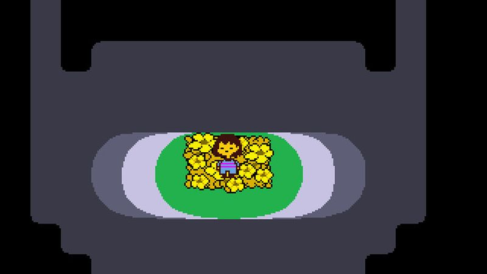
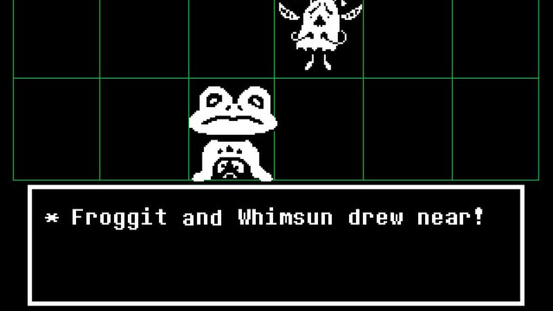

The thirty-second version
Mercy is a mechanic and it hurts.
I petted the dog. Then I petted the dog again. Then I lost my job.
Undertale is a small game with the confidence of a much bigger one. You can spare everything you meet, you can murder your way through, or you can find out that both options make the game legitimately upset with you. It's a JRPG built by one person that made grown dads misty-eyed at a fight against a goat, and we don't fully understand why it works either.
Okay, what is this thing?
You fall into a mountain, meet a goat lady who bakes you a pie, and are politely informed the whole underworld would like to kill you. Then a talking flower turns out to be a menace, and eight hours later you're weeping about a skeleton. We don't have a coherent way to describe this. It's just what happened. All three of us. On different weekends.
Combat is a bullet-hell dodge minigame layered over turn-based RPG choices, and every enemy has a non-lethal solution if you can figure out the correct compliment. The music is doing a lot of the emotional work, the writing is doing the rest, and the game remembers your choices in ways that will make you very careful about restarting. Or, if you're the Tactician, curious in a way that ruined a Saturday.


Why it escaped the group chat
- Made largely by one person, Toby Fox, who also wrote the soundtrack and drew most of the sprites himself.
- Combat blends bullet-hell dodging with turn-based menus, and every enemy has a non-violent option.
- It plays in about six to eight hours on a single route, and the routes are extremely not the same.
Three dads enter
01
Dad Who Skipped the Tutorial
I was fine. Then Toriel showed up. I was not fine.
I didn't know I was signing up to be emotionally ambushed by a goat lady with a rolling pin. I beat the pacifist run over three evenings on PC, teared up twice, and I'm refusing to say which parts on the record. I'd like everyone to know I was 'just tired' during the boss fight. The other two weren't there for it, and somehow they still saw it.
02
The Descent Guy
The game reads your save data and I had opinions about it.
I clocked what the game was doing with save data about ten minutes in and it became a whole thing at the kitchen table. I respect it, mechanically. I also think it's the most Descent-adjacent thing about the game, which is a hot take you can only get from a man with strong opinions about six degrees of freedom in a JRPG. That man is me.
03
Normal-ish Dad
The rare short game we discussed for a month.
I finished it in a week of school-night sessions and then spent the next month making the other two discuss the ending in the group chat at increasingly unreasonable hours. It's short, it fits between kids' bedtimes, and it does more with six hours than most games manage with sixty. I put it in my top ten and I haven't budged since.
Who it is for and what to watch
Invite these people
- People who loved Earthbound and haven't stopped talking about it
- Anyone who wants to play something short that stays with them
- Dads who need to be reminded to feel things
Dad caveats
- The pixel art masks how much reading you're doing
- The bullet-hell escalates in the back half and gets genuinely tough
- You will absolutely spoil yourself if you Google the wrong word
Receipts
All three of us played the pacifist route on PC, one of us did the neutral run out of curiosity, and none of us have the stomach to do the third one.